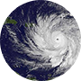

Hurricane Andrew
Category 5
One of the most devastating hurricanes to hit the United States. Andrew was responsible for 23 deaths and $26.5 billion in damage in the United States alone.
August 1992
Hurricane Katrina
Category 5
The costliest and one of the deadliest hurricanes to hit the United States, causing $75 billion in damage in New Orleans and the Mississippi Coast. Katrina was also responsible for a reported 1200 deaths.
August 2005
Hurricane Irma
Category 5
One of the largest hurricanes to hit the U.S. since Katrina. According to reports, at least 73 people were killed in the Caribbean and the United States.
August-September 2017

Hurricane Maria
Category 5
Hurricane Maria caused a major humanitarian crisis in U.S. Territory Puerto Rico. As of October 2017, 89% of the island is left without power, the death toll has risen to 45 and at least 113 people remain missing.